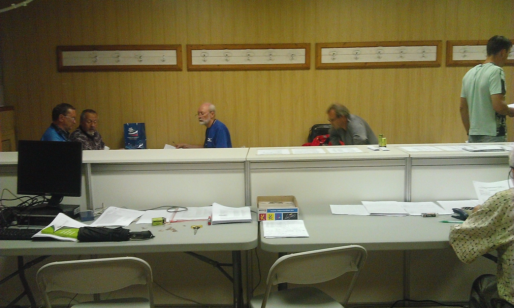
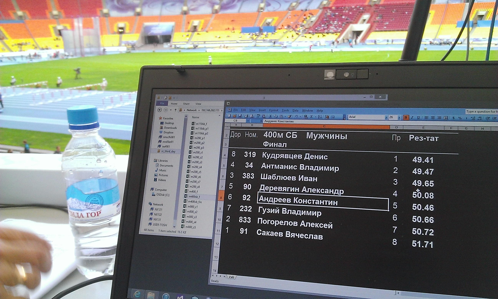
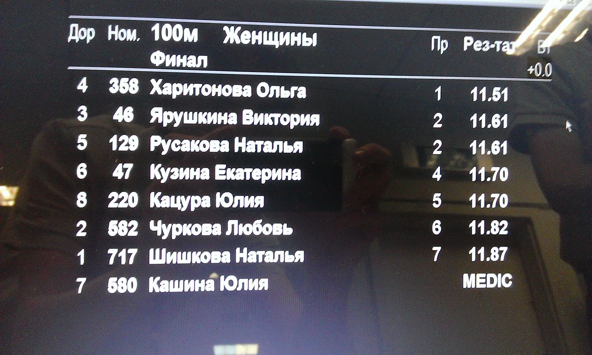
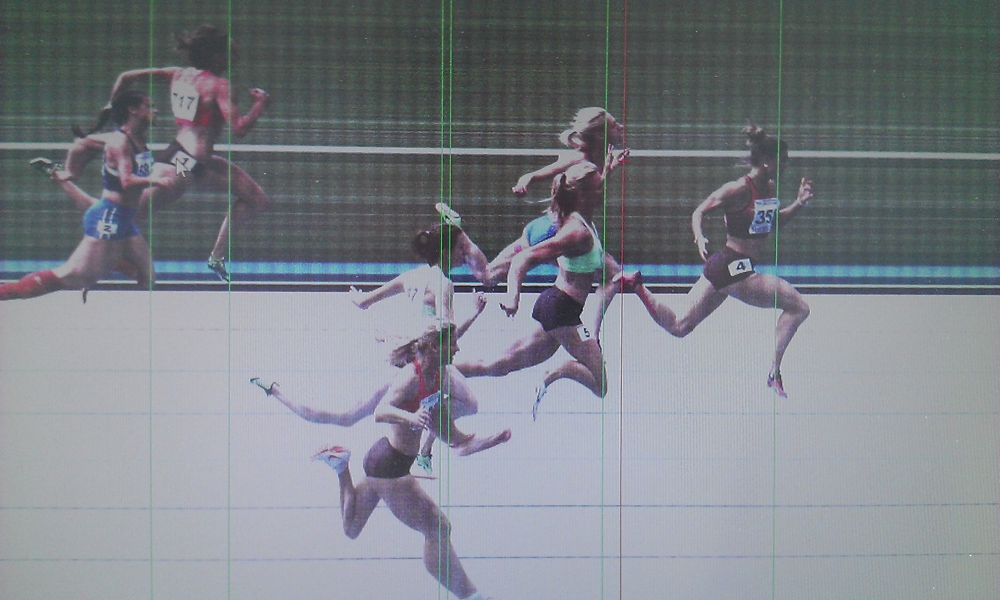
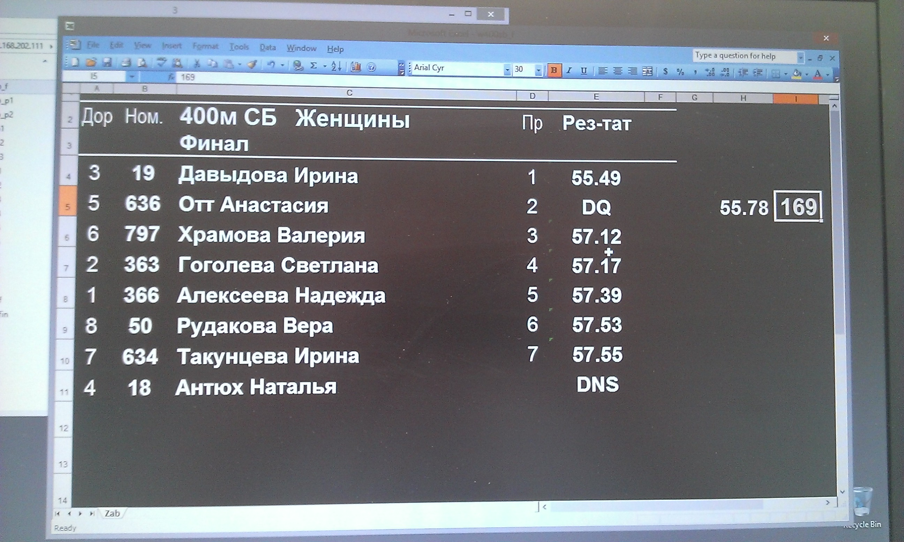

Кулуары Чемпионата России по Легкой АтлетикеThursday, July 25, 2013
Для большинства, прошедший чемпионат, начался воскресным утром, двадцать первого июля, когда судьи и организаторы приступили к исполнению своих должностных обязанностей. Команды, не пожелавшие подать заявки ранее, провели первую половину дня в секретариате, оформляя регистрационные карточки. Спортсмены смирно выжидали своей очереди, проходившей в окружении стен небольшой комнатки, где и потолок был ниже, не говоря уже о стоявших крепостью коробках с футболками и бейджиками.
И к сожалению, этой маленькой неурядицей, ставшей результатом плохой организации, и началась вся серия проблем, пошатнувших нервы всем задействованным сторонам. Так, например, днем ранее не было сообщено командам о правилах привоза снаряжения, и как итог, атлеты с семи утра искали где бы им оставить, и без того приносящие не малые хлопоты, шесты.
В тот воскресный день я занимался сортировкой регистрационных карточек в ТИЦ и в ходе общения с измученными тренерами сумел немного окунуться в детали, беспокоивших команды, нерешенных вопросов. Кто-то из участников не успел разместиться в отеле, у других отменили рейс и им не удалось прилететь к назначенной дате, третьи не получили точных указаний и в судорожном состоянии искали хоть кого-то, кто мог открыть истину.
Но мне, как человеку занимающемуся технической стороной, то есть сбором статистических данных приходящих с состязаний и после распределению этой информации по разным пунктам назначения, таким как секретариат, журналисты, интернет сайт федерации и телевизионное табло стадиона, интересна совсем другая часть вопросов, ответы на которые не удалось найти за долгие годы поисков. Сейчас мы пользуемся довольно простой моделью сбора результатов – волонтеры, сидящие за одним столом с секретарем, заполняют таблицу в Excel; документ лежит в сетевой папке и его видят все участники, от секретариата, имеющего непосредственный доступ к файлу, до журналистов, получающих его после публикации, по окончанию состязания, на сайте.
Такой подход, с одной стороны не требует никаких дополнительных программных и технических средств, что позволяет сократить денежные издержки. С другой, расходует драгоценное время и приводит к ошибкам. Попытки написать единую программную платформу уже были, но все они провалились по тем и иным причинам, в основном от лени руководства. Надеюсь в следующие десять лет, старые чиновники ВФЛА будут заменены готовыми к изменениям и использованию компьютеров, иначе мы так и будем «считать на счетах» и в ручную сортировать тысячи бумажек.
...
Существует такое понятие как «этика», ставящая своей целью сохранять порядок и честный, спортивный дух соревнований. В рядах ее орудий есть такой инструмент как «сторонний хронометрист», - организация, нанимаемая федерацией для установления показанных результатов. Во многих странах, и на всех чемпионатах мирового значения, таким хронометристом выступает третья организация, никак не связанная со структурами спортивного министерства и федерации, что гарантирует незаинтересованность в фальсификации результатов.
Но что имеем мы, - отсутствие не только самодостаточного хронометриста, но и полное непонимание необходимости этой организации. Так, на каждый чемпионат приглашаются местные судьи, либо их коллеги из регионов, кто хоть немного умеет работать с компьютером и фото камерой, и вручают в обязанности несчастных, на протяжении нескольких суток подряд, выдавать результаты беговых дисциплин, коих обычно не мало. Понятно, что никто и не ставит вопроса о территориальной принадлежности судей, занятых этой работой, а ведь они приезжаю одной командой и могут быть нечестны. На самом деле, такое состояние дел, в частности, противоречит правилам федерации.
 И вот таких, на первый взгляд, крохотных проблем становится все больше. Стоит сконцентрироваться на одной и сразу наружу выступают другие. И к сожалению, судьи, даже такого крупного соревнования, как Чемпионат России, не только совершают нелепые ошибки, но и не пренебрегают возможность забыть о честности, в угоду может не личных, но все же, имеющим свою цель, интересов.
Одной из заложниц судейской ошибки стала Настя Отт, пробежавшая «четырёхсотку» с барьерами со вторым результатом – 55.78 секунды. Не плохой показатель, пусть и далекий от мирового рекорда, был аннулирован поспешной дисквалификацией. Как это выглядело для нас, сидевших на фото финише и писавших протокол? – спустя пару забегов после Настиного нам принесли записку о дисквалификации с номером правила, которое, как оказалось позже, было неприменимо, и не было нарушено. Спустя пару часов разбирательств судьи остановились на другом правиле и принесли протокол с указанием установленных причин.
В те же часы главный судья, в гневе, не оставил сидеть спокойно никого, кто был занят секретарской работой. Настю успели наградить, а это еще более подливало масла в разгорающееся пламя. Но о чем история, - о поспешности, непрофессионализме и глупости, съедающей наш спорт. К счастью, в федерации есть и достойные люди, вернувшие награду, заслужившей ее девушке, не найдя никаких нарушений.
Такие ошибки можно свести к минимуму, изменив модель судейства, имея одну, но профессиональную команду, желающую принести улучшения. Но а пока, начиная местными соревнованиями и заканчивая чемпионатом всей страны, мы продолжаем обрабатывать данные вручную, пользуясь по возможности Excel’ем, тратя впустую массу времени и денег налогоплательщиков. Изменения важны не столько для быстрой организации соревнований, сколько для улучшения результатов наших атлетов. А ведь достаточно одного волевого решения верхушки федерации, чтобы поставить окончательную точку.